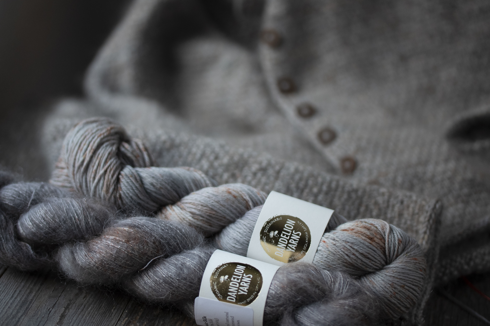
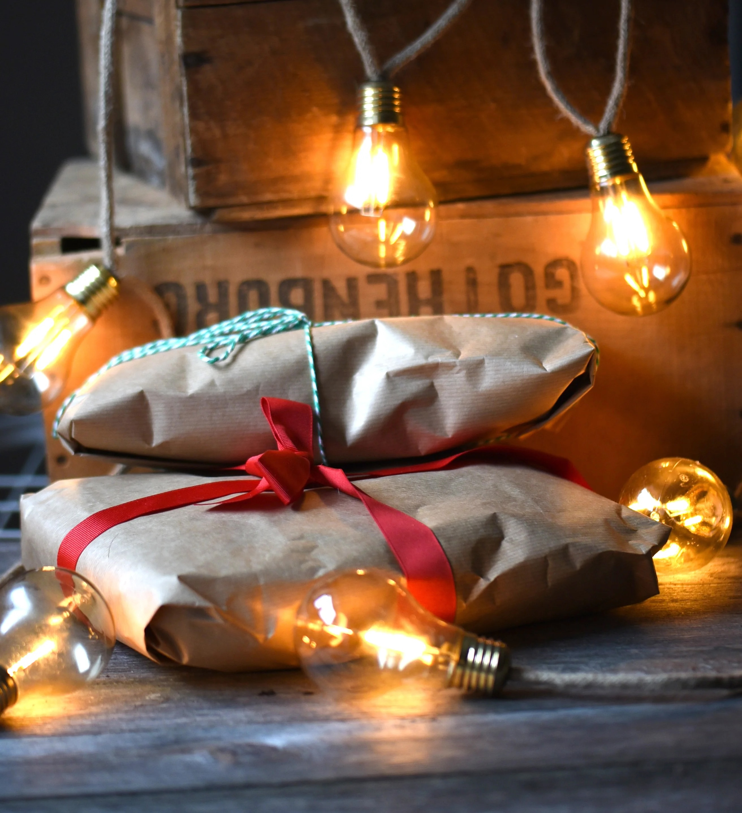
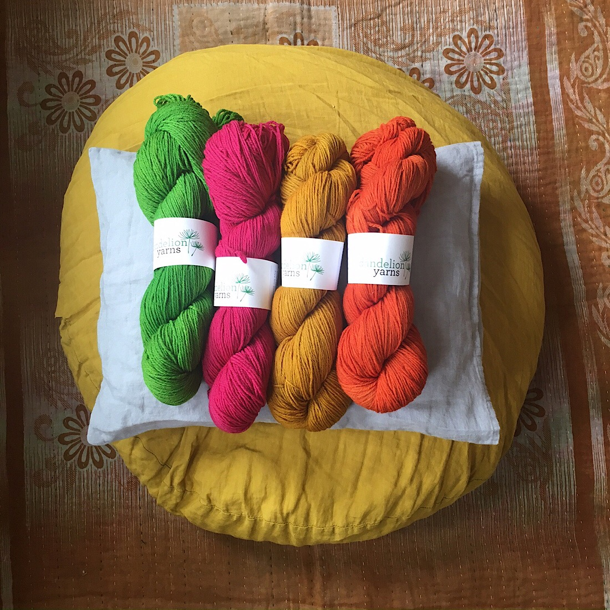
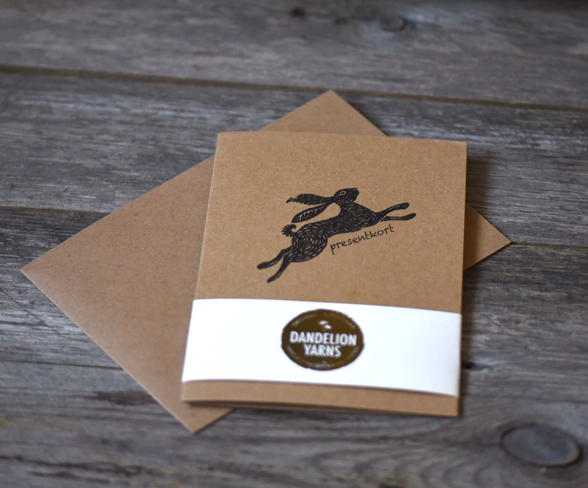
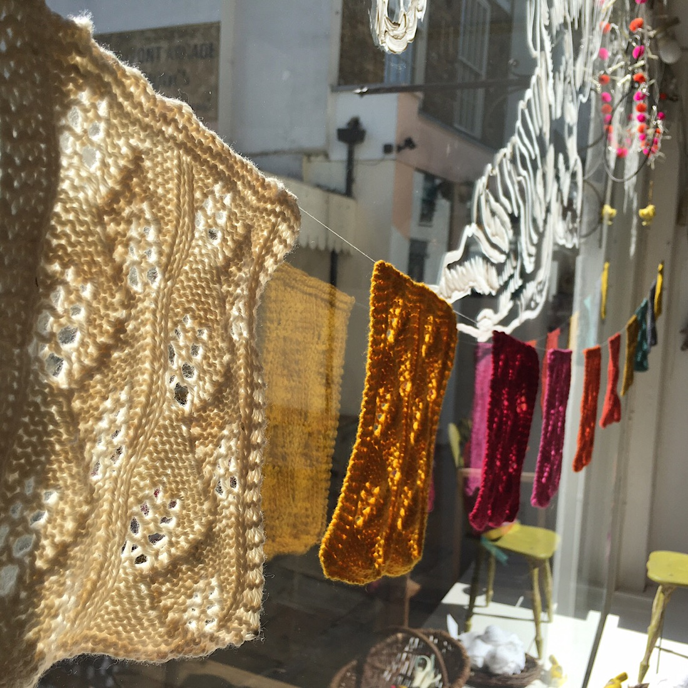
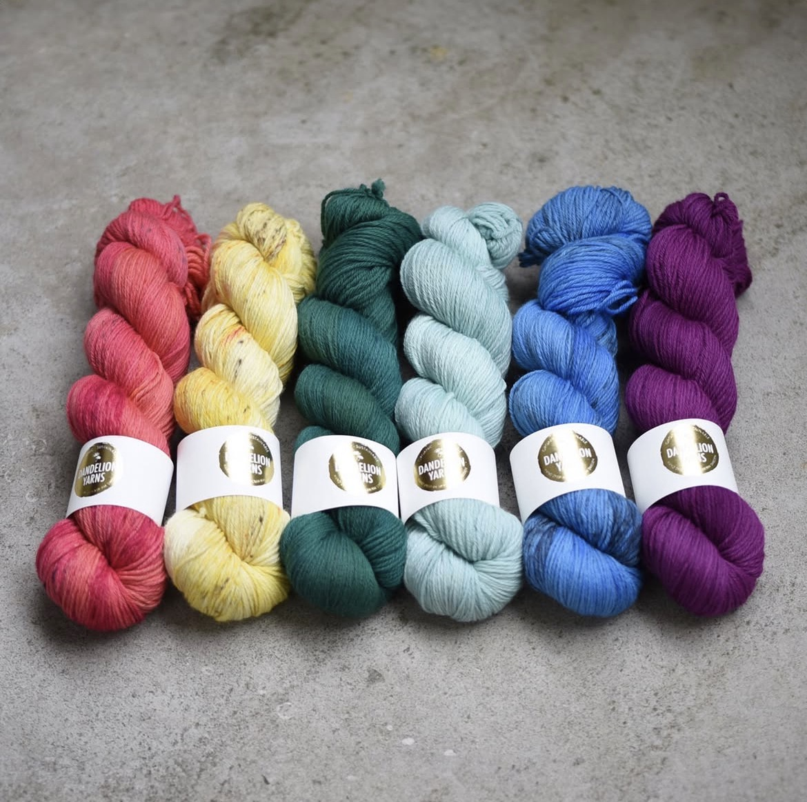

Uppdrag
Grundare & Kreativ
Dandelion Yarns var mitt eget varumärke för handfärgat garn, där jag utvecklade allt från färgpaletter och kollektioner till visuell identitet och kommunikation. Arbetet grundades i en praktisk, materialdriven process där färgning, textur och färg var centralt i varje kollektion. Parallellt med det fysiska skapandet byggde jag en visuell värld kring varumärket genom foto och berättande, framför allt på Instagram. Över tid växte det till ett engagerat community, där atmosfär, färg och en stark känsla för identitet formade hur arbetet upplevdes.





